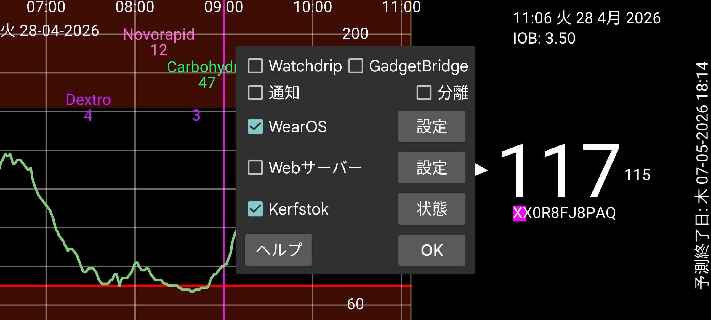

ar be de es fr hi it ja ko nl pl pt ru tr uk uz zh en
現在、Juggluco はウォッチに血糖値を表示する 6 つの方法を持っています。
通知 をオンにすると、新しい血糖値が到着するたびに Android 通知が作成されます。一部のウォッチでは、新しい通知が作成されたときのみウォッチに通知が送信されるため、それらでは 個別 をオンにする必要があります。これらのウォッチでは、ウォッチでアラーム通知を受信するためにも 個別 をオンにする必要があります。
これをオンにすると、Juggluco は Watchdrip+ に血糖値を送信します。Watchdrip+ は血糖値を表示するウォッチフェイスを MiBand/Amazfit ウォッチに送信します。
GadgetBridge は MiBand/Amazfit ウォッチに天気情報を表示できるようにします。GadgetBridge オプションをオンにすると、Juggluco は天気情報のふりをして血糖値を GadgetBridge に送信します。これは Watchdrip より高速ですが、表示される情報が少ないという欠点があります。Juggluco は血糖値と方向矢印を天気の場所に入れます。この場所はウォッチの天気の下に表示されます。私はこの場所を表示するウォッチフェイスを見つけられませんでした。mmol/L のみ: 小数点前の値が最高気温に、小数点後の値が最低気温に入れられます。mg/dL の値は気温として大きすぎるため、最後の桁を最低気温に、最後の桁の前の数値を最高気温に入れます。したがって 106 mg/dL は最高気温 10、最低気温 6 になります。
変化の方向で天気アイコンが決まります: 雪は低下する血糖、雨は上昇する血糖。現在の気温にも入れられます。0 より大きいと血糖が上昇中、0 より低いと血糖が低下中を意味します。
Kerfstok は数値(インスリン用量など)を入力できるウォッチアプリですが、現在の血糖値も表示します。新しい血糖値が到着するとすぐに Juggluco がそれを Kerfstok に送信します。そのため Kerfstok は常に最新の血糖値を表示します。Kerfstok は Garmin がサポートするすべてのアクティビティを記録でき、速度や距離も表示できます。ウォッチ → Kerfstok 状態 → ヘルプおよび https://www.juggluco.nl/Kerfstok を参照してください。
アプリは Juggluco から送信される血糖ブロードキャストの 1 つから血糖値を受信し、これらの血糖値をウォッチに送信できます。例えば G-Watch (TizenOS または WearOS) は Glucodata ブロードキャストから血糖値を受信できます(左メニュー → 設定 → データ交換を参照)。
Juggluco は xDrip/Nightscout Web サーバーを内蔵しています。これにより xDrip ウォッチアプリを Juggluco で直接使用できます。xDrip は 5 分ごとにのみ新しい血糖値を表示しますが、Juggluco は毎分新しい血糖値を表示します。Juggluco は最新の血糖値を xDrip ウォッチアプリにも送信します。血糖値はウォッチアプリが要求した場合にのみウォッチに送信されるため、表示される値の古さはウォッチアプリがいつ要求するかに依存します。例えば Garmin ウォッチのウォッチフェイスやデータフィールドは 5 分ごとにしか血糖値を要求しません。xDrip 経由ではしばしば 10 分前の血糖値になりました。Juggluco に直接接続すると、これらのウォッチフェイスは最大 6 分前の血糖値を表示します。Garmin で Kerfstok を使えない場合、最新の血糖値を定期的に受信するための次のオプションがあります。xDrip ウィジェット (https://apps.garmin.com/en-US/apps/73115e04-dc9f-4765-ad88-e7ae283ce995) はアクティビティの記録中にも使用できます。手が空いていれば、標準の Garmin スポーツアプリでアクティビティを記録しながらこの xDrip ウィジェットに切り替えられます。定期的に血糖値を更新する xDrip スポーツアプリもあります: https://apps.garmin.com/en-US/apps/aaf6533b-bca1-4365-9131-9f882f6f148c。血糖値が利用可能になった直後にそれを要求するように、ある瞬間に開始してみることができます。データフィールドとウォッチフェイスは理想的な解決策ですが、Garmin による制約があるため、ほとんど価値がありません。
以前は Juggluco の Web サーバーを Fitbit 用のウォッチフェイスで使用できました: https://glancewatchface.com。2024 年半ばから Fitbit ウォッチではサードパーティアプリは許可されなくなりました: https://www.techradar.com/health-fitness/fitbit-watches-in-the-eu-will-lose-third-party-apps-and-watch-faces-heres-why。EU の規制がこの決定を引き起こしたはずです。Wear OS で代替アプリストアの許可が要求される可能性かもしれません: サードパーティアプリのないシンプルなフィットネストラッカーも許容されており、私たちはそうなれます。VPN を使って場所を米国に変更すると、再びサードパーティアプリをインストールできると主張する人もいます。
Web サーバーインターフェースの詳細は https://www.juggluco.nl/Juggluco/webserver.html を参照してください。
Wear OS に移植された Juggluco のバージョンがあります。表示はより小さな画面に適応されており、ウォッチフェイスが追加されています。ウォッチフェイスは通常の Wear OS ウォッチフェイスとしてインストールでき、時刻に加えて Bluetooth 経由で受信した現在の血糖値を表示します。